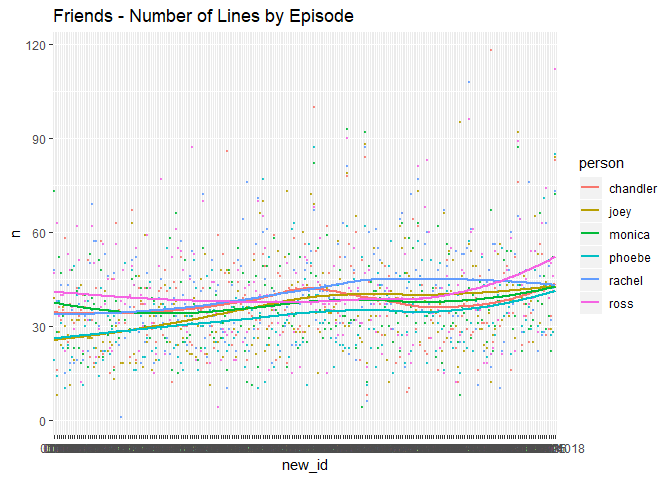

library(dplyr)
#>
#> Attaching package: 'dplyr'
#> The following objects are masked from 'package:stats':
#>
#> filter, lag
#> The following objects are masked from 'package:base':
#>
#> intersect, setdiff, setequal, union
friends_lines %>%
group_by(episodes_id) %>%
summarize(max = max(scene2)) %>% ungroup() %>%
summarize(avg_scenes = mean(max))
#> # A tibble: 1 x 1
#> avg_scenes
#> <dbl>
#> 1 13.5friends_lines %>% filter(type %in% c("person", "scene")) %>% count(episodes_id) %>% arrange(n)
#> # A tibble: 228 x 2
#> episodes_id n
#> <chr> <int>
#> 1 0911 2
#> 2 07 189
#> 3 0203 199
#> 4 0114 206
#> 5 0904 212
#> 6 0224 214
#> 7 0202 217
#> 8 0712 217
#> 9 0207 221
#> 10 0411 224
#> # ... with 218 more rowslibrary(ggplot2)
main_char <- c("chandler", "ross", "monica", "phoebe", "joey", "rachel")
friends_lines %>%
filter(person %in% main_char) %>%
count(person, episodes_id, sort = TRUE) %>%
mutate(new_id = as.factor(episodes_id)) %>%
ggplot(aes(x = new_id, y = n)) +
geom_point(aes(colour = person), size = 0.5, alpha = 0.8) +
geom_smooth(stat = "smooth", se = FALSE, method = "auto", aes(group = person, colour = person), alpha = 0.8) +
scale_fill_brewer(palette = "Dark2") +
ggtitle("Friends - Number of Lines by Episode")
#> `geom_smooth()` using method = 'loess' and formula 'y ~ x'